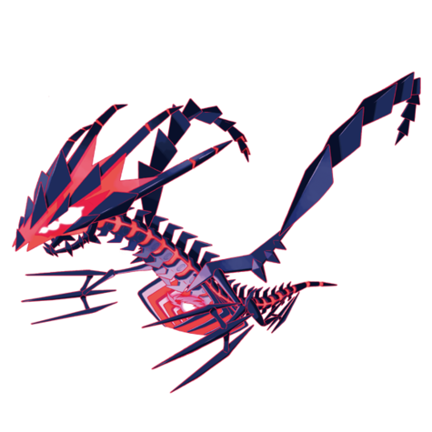
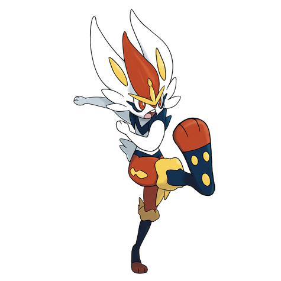
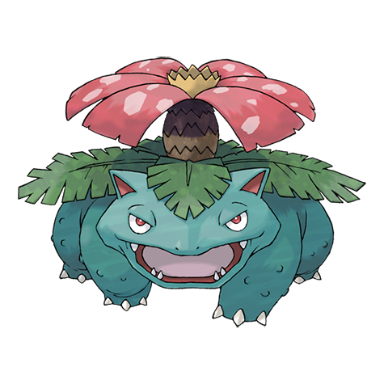
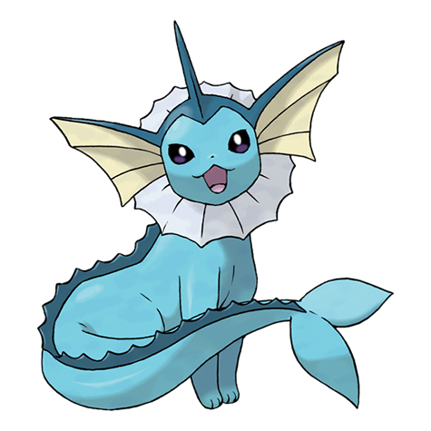
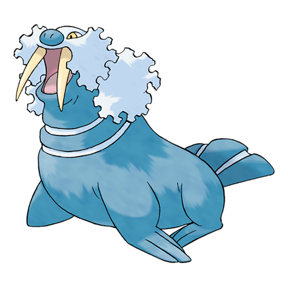
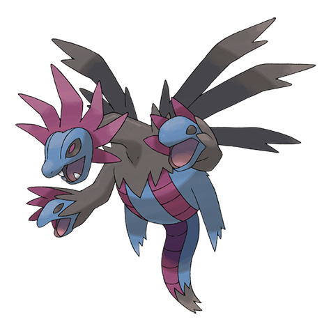

- キョダイマックスジュラルドン（はがね・ドラゴン／★6）。弱点はかくとう・じめんの2つだけ。色違いあり。人を集めて挑むレイド級の大型マックスバトル（最低20人目安）
- 仙台ワイルドエリア版は今日 11/8(日) が最終日（11/6〜11/8）。参加には基本チケット（1日券 4,000円）が必要（チケット限定）。チケットなしの sakata は仙台版には参加できません
- 全国版は 11/14(土)〜11/15(日) に予定（ポケらく・doctorpokegogo 一致）。全国版のチケット要否は情報源に明記なし → ゲーム内で確認を
- ねらい目は砂稼ぎ：1戦でほしのすな 25,000。リワード2倍（200ポケコイン）＋ほしのかけらで 1戦 75,000（下の「リワード（砂稼ぎ）」参照）
弱点と対策ポケモン
はがね・ドラゴンのボス。弱点はかくとうとじめんの2つだけ（ポケらく・ゲームウィズ・doctorpokegogo 一致）。この2タイプのアタッカーを並べます。
かくとうで攻める
- キョダイマックスカイリキー（マックス技：キョダイシンゲキ）＝筆頭。通常技カウンター／ゲージ技ばくれつパンチ
- ウーラオス（いちげき・れんげきどちらでも／マックス技：ダイナックル）通常技カウンター／ゲージ技ばくれつパンチ
じめんで攻める
- ドリュウズ（マックス技：ダイアース）通常技マッドショット／ゲージ技ねっさのだいち
- ドサイドン（マックス技：ダイアース）通常技どろかけ／ゲージ技じしん
受け・盾役（HPを削られにくい）
- ザマゼンタ（たてのおう）＝筆頭（ポケらく・ゲームウィズ・doctorpokegogo 一致）
- レジスチル／ハピナス／メタグロス／アーマーガア（ゲームウィズ）
通常技・ゲージ技はゲームウィズのおすすめ。ダメージの中心はマックス技（キョダイシンゲキ・ダイナックル・ダイアース）です。
sakata の手持ちで言うと（タップで開く）
仙台版はチケットが要るので参加できません。全国版（11/14-15・通常のマックスバトルとみられる）に挑むなら、かくとう＝キョダイマックスカイリキー（キョダイシンゲキ Lv3・MAX・CP3049・15-15-14・PL40）（＝上の筆頭そのもの）・じめん＝ドリュウズ（ダイアース）／ドサイドン・受け＝王の姿ザマゼンタ（たてのおう・開始時に盾1枚＝上の筆頭）が手持ちの対策役。手持ちのくわしい数値は 手持ちダイマックス一覧 へ。
ボスの技（スペシャルアタック）
ゲージ技（スペシャルアタック）は下の3つから抽選（ポケらく・ゲームウィズ一致）。数字は威力。
- はかいこうせん（ノーマル・威力150）← いちばん痛い。必ずよける
- ラスターカノン（はがね・威力120）
- ドラゴンクロー（ドラゴン・威力54）← いちばん軽い
自分が狙われたアイコンが出たら、左右どちらかにスワイプして「よける」。
与ダメージランキング（弱点別）
※ 下の数字はボスの防御を考えない目安です（専用ページ「ダイマックス技 攻撃ランキング（タイプ別）」の等倍1発×弱点倍率を切り捨て、ダイマックス中に3回撃つ前提の3発合計）。実際のダメージはボスの防御でも変わります。
- 1位 キョダイマックスカイリキー（キョダイシンゲキ）：約473 ×3発 ＝ 1419手持ち
- 2位 ウーラオス(れんげき)（ダイナックル）：約398 ×3発 ＝ 1194
- 3位 ウーラオス(いちげき)（ダイナックル）：約398 ×3発 ＝ 1194
- 4位 エルレイド（ダイナックル）：約372 ×3発 ＝ 1116
- 5位 カイリキー（ダイナックル）：約368 ×3発 ＝ 1104手持ち
- 1位 ドリュウズ（ダイアース）：約398 ×3発 ＝ 1194手持ち
- 2位 ドサイドン（ダイアース）：約379 ×3発 ＝ 1137手持ち
- 3位 サイドン（ダイアース）：約350 ×3発 ＝ 1050
- 4位 フライゴン（ダイアース）：約324 ×3発 ＝ 972
- 5位 キングラー（ダイアース）：約313 ×3発 ＝ 939
推奨人数と立ち回り
- 最低20人が目安（ポケらく・9db）。安定して倒すなら25〜30人以上（ゲームウィズ）。ダイきのこを使えばさらに少人数でも可（ポケらく）
- 流れ：まず盾役（ザマゼンタなど）で通常技を連打してマックスメーターをため、キョダイカイリキー／ドリュウズに替えてマックス技で攻める
- ボスの大技（とくにはかいこうせん）はよけるのが最優先。狙われアイコンで左右スワイプ
- フィールドのエネルギーはスワイプで拾うとマックス技が早く撃てる
- ★6のレイド級。ソロは不可で、人を集めて挑む大型バトル
出現期間とチケット
① 仙台ワイルドエリア版（チケット限定）
- 期間：11/6(金)〜11/8(日)。今日 11/8(日) が最終日（ポケらく・朝のノート一致。ポケらくは各日 6:00〜21:00）
- 参加には基本チケット（1日券 4,000円・税込）が必要（チケット限定）。チケットなしの sakata は仙台版には参加できません
② 全国版
- 予定：11/14(土)〜11/15(日)（ポケらく・doctorpokegogo 一致）。時間はサイトで食い違い（ポケらく 6:00〜21:00／doctorpokegogo 10:00〜18:00）→ ゲーム内で確認
- チケット要否は情報源に明記なし。通常のパワースポットのマックスバトルとみられる（チケットなしでも挑める可能性）→ ゲーム内で確認を
色違いあり（初登場から実装）。捕獲時の個体値100%CPは 1753（ポケらく・ゲームウィズ一致）。
リワード（砂稼ぎ）
勝つともらえるほしのすな（1戦ぶん）。※リワード2倍は購入前に確認画面が出ます。
- 通常：ほしのすな 25,000（ポケらく・ガジェット通信・gamepedia 一致）。ほかに XP 25,000・ふしぎなアメXL×1・ジュラルドンのアメ×30（ポケらく）
- ＋ほしのかけら（砂1.5倍・30分）：37,500
- ＋リワード2倍（200ポケコイン）：50,000（ガジェット通信・gamepedia 一致）
- リワード2倍＋ほしのかけら（1.5×2＝3倍）：1戦 75,000（ガジェット通信）
計算：25,000 ×1.5（ほしのかけら）×2（リワード2倍）＝ 75,000。周回するほどアタッカー強化の砂がたまります。
サイトで違っていた点・注記
タップで開く
- 弱点倍率：タイプ（かくとう・じめん）は複数サイト一致。ゲームウィズに「×2.56」の表示があったが、はがね・ドラゴンでこの倍率になる組み合わせは確認できず（通常は×1.6）→ 倍率は載せずタイプのみ掲載
- 全国版の時間：ポケらく=6:00〜21:00／doctorpokegogo=10:00〜18:00 で食い違い。日付（11/14-15）は一致
- 推奨人数：ポケらく「最低20人」／ゲームウィズ「25人前後〜30人以上で安定」。幅があるので両方掲載
- 最大CP（3468など）はゲームウィズのみ記載のため未掲載。捕獲時100%CP 1753 は2サイト一致で掲載
- 全国版のチケット要否は情報源に明記なし。仙台版がチケット限定なのは朝のノートの区分どおり
ボスの強さ（PokéChespin t6-gmax・実験値）
PokéChespin（pokechespin.net）の t6-gmax モデル（★6キョダイマックス）。強さは HP と t6-gmax 係数（単一値）で決まる。この係数は実験値で、みんポケ式の単体／全体／防御の3分値とは違い、低攻撃種族の補正込みの単一係数（攻撃倍率は t6-gmax では×1＝t5ダイマックスの×2とは異なる）。避けられない全体攻撃の実効は 1.0、スワイプで避けられる単体攻撃はその2倍（2.0）。みんポケ(9db)はこのボスのCPMを公表していないため、t5ダイマックスのような外部データでの検算はできない（下の数値は PokéChespin の実験モデルによる目安）。このボスの係数は PokéChespin の未調整の既定値（code 100→1.0）で、個別に調整された値ではない点に注意。
| 項目 | 値 |
|---|---|
| HP | 50,000 |
| t6-gmax 係数（単一値・実験値） | 1.0（未調整の既定値） |
| 攻撃倍率 | ×1 |
| 全体攻撃の実効（避けられない） | 1.0×1 ＝ 1.0 |
| 単体攻撃（スワイプで回避可） | 全体の2倍 ＝ 2.0 |
HPは PokéChespin t6-gmax の 50,000。※このページ（11/8 作成）では当初、倍率の根拠が割れるとして被ダメージ率を不掲載としていた。今回は出典を PokéChespin t6-gmax（HP 50,000・係数は未調整の既定値 1.0）に統一し、実験値であることを明記したうえで掲載する（みんポケは倍率未公表）。
出典: PokéChespin（pokechespin.net・GitHub CreatorBeastGD/pokechespin）の t6-gmax モデル（みんポケ=9db はCPM未公表）（PokéChespin t6-gmax：lib/PoGoAPI.ts t6gmaxStats（HP）＋ lib/calculations.ts CPM_VALUES（コード→係数）・攻撃倍率は lib getDamageMultiplier('raid-t6-gmax')=1）／CPM・HPともに実験値のため目安
被ダメージ率（全体攻撃1発）
ボスの全体攻撃（避けられない技）1発で、各ポケモンが最大HPの何％を削られるか（実ダメージ÷最大HP）。100%超＝1発で倒れる（赤セル）。PokéChespin t6-gmax モデル（★6キョダイマックス・係数は実験値 1.0×攻撃倍率×1＝実効 1.0）で計算。手持ちのダイマックス／キョダイマックス全個体を、いちばん耐える順（下の注記参照）で並べている。
| 受け役 | ラスターカノン 威100 | はかいこうせん 威150 | ドラゴンクロー 威45 |
|---|---|---|---|
 ザマゼンタ(王) ザマゼンタ(王)盾+60 HP228 | 16.7% | 21.1% | 7.9% |
 ハピナス ハピナスHP399 | 26.8% | 33.3% | 12.0% |
 メタグロス メタグロスHP154 | 34.4% | 42.9% | 15.6% |
 ザシアン ザシアンHP158 | 50.0% | 39.2% | 5.7% |
| ハピナス(2体目) HP305 | 45.9% | 57.4% | 20.7% |
 ディアルガ ディアルガHP130 | 54.6% | 68.5% | 40.0% |
 ムゲンダイナHP185 | 61.1% | 76.8% | 44.3% |
 カイリキー カイリキーHP174 | 63.8% | 79.9% | 28.7% |
 ドサイドン ドサイドンHP188 | 88.8% | 43.6% | 25.0% |
 ドリュウズ ドリュウズHP150 | 74.0% | 92.7% | 33.3% |
 ユクシー ユクシーHP115 | 79.1% | 99.1% | 35.7% |
 エースバーンHP149 | 49.7% | 99.3% | 36.2% |
 ゲンガー ゲンガーHP126 | 100.0% 1発で倒れる | 49.2% | 45.2% |
 フシギバナHP138 | 81.2% | 101.4% 1発で倒れる | 37.0% |
 ラティアス ラティアスHP121 | 81.8% | 102.5% 1発で倒れる | 59.5% |
 シャワーズHP169 | 54.4% | 108.9% 1発で倒れる | 39.6% |
 トドゼルガHP152 | 89.5% | 111.8% 1発で倒れる | 40.8% |
 レジドラゴ レジドラゴHP246 | 91.9% | 115.0% 1発で倒れる | 66.3% |
 パルキア パルキアHP119 | 59.7% | 119.3% 1発で倒れる | 68.9% |
 サザンドラHP132 | 96.2% | 119.7% 1発で倒れる | 68.9% |
 ラティオス ラティオスHP119 | 95.8% | 120.2% 1発で倒れる | 69.7% |
 インテレオン インテレオンHP130 | 67.7% | 134.6% 1発で倒れる | 48.5% |
| カイリキー(2体目) HP129 | 115.5% 1発で倒れる | 145.0% 1発で倒れる | 51.9% |
 サーナイト サーナイトHP117 | 157.3% 1発で倒れる | 122.2% 1発で倒れる | 17.9% |
 ニューラ ニューラHP93 | 281.7% 1発で倒れる | 220.4% 1発で倒れる | 79.6% |
 マーイーカ マーイーカHP79 | 346.8% 1発で倒れる | 432.9% 1発で倒れる | 155.7% 1発で倒れる |
手持ちの実CP・実個体値で計算。ボスの強さは PokéChespin t6-gmax モデル（pokechespin.net）の実験値（単一係数＝低攻撃種族の補正込み／みんポケはCPM未公表で t5 のような外部検算なし）。全体攻撃＝係数 1.0×攻撃倍率1の実効 1.0（t6-gmax の攻撃倍率は×1＝t5の×2と異なる）、単体攻撃（スペシャル技・スワイプで回避可）はその2倍、天候ブースト時は1.2倍。王の姿ザマゼンタは開始時の盾ぶん最大HP+60で計算。威＝技の威力。並びは、そのボスの全体攻撃のうちいちばん被ダメージ率が高い技（最悪ケース）が小さい順（＝いちばん耐える手持ちが上）。出典: PokéChespin t6-gmax（式は GO標準のダメージ式 0.5×威力×攻÷防×倍率＋1・あくまで実験モデルの目安）／画像: PokéAPI
実効防御比較表
ボスの各攻撃タイプに対する、各ポケモンの実効防御（防御実数値をタイプ相性で割った値）の比較。値が大きいほど、そのタイプの技を受けたときのダメージが小さい。数字・並び順・列は計算済みの表をそのまま転記（このページでの再計算はしていない）。実効防御は技威力を含まない指標のため、同じタイプの技は同じ値になります。
全体の実効防御ランキング（上位25）
| 順位 | 候補 | 区分 | HP | ラスターカノン | はかいこうせん | ドラゴンクロー |
|---|---|---|---|---|---|---|
| 1 | ザマゼンタ（王） | 手持ち | 168 | 402（0.625） | 402（0.625） | 402（0.625） |
| 2 | レジスチル | 以外 | 162 | 379（0.625） | 379（0.625） | 379（0.625） |
| 3 | メタグロス | 手持ち | 154 | 293（0.625） | 293（0.625） | 293（0.625） |
| 4 | アーマーガア | 以外 | 186 | 262（0.625） | 262（0.625） | 262（0.625） |
| 5 | メルメタル | 以外 | 220 | 259（0.625） | 259（0.625） | 259（0.625） |
| 6 | メルメタル（キョダイ） | 以外 | 220 | 259（0.625） | 259（0.625） | 259（0.625） |
| 7 | ルギア | 以外 | 197 | 257 | 257 | 257 |
| 8 | メタング | 以外 | 134 | 242（0.625） | 242（0.625） | 242（0.625） |
| 9 | ホウオウ | 以外 | 180 | 328（0.625） | 205 | 205 |
| 10 | ツボツボ | 以外 | 79 | 203（1.6） | 520（0.625） | 325 |
| 11 | ブラッキー | 以外 | 182 | 202 | 202 | 202 |
| 12 | スイクン | 以外 | 189 | 316（0.625） | 198 | 198 |
| 13 | ザシアン（王） | 手持ち | 158 | 193 | 309（0.625） | 792（0.244） |
| 14 | ダンバル | 以外 | 106 | 186（0.625） | 186（0.625） | 186（0.625） |
| 15 | ミロカロス | 以外 | 182 | 296（0.625） | 185 | 185 |
| 16 | リーフィア | 以外 | 140 | 185 | 185 | 185 |
| 17 | エムリット | 以外 | 162 | 179 | 179 | 179 |
| 18 | カメックス | 以外 | 160 | 281（0.625） | 175 | 175 |
| 19 | カメックス（キョダイ） | 以外 | 160 | 281（0.625） | 175 | 175 |
| 20 | カポエラー | 以外 | 120 | 175 | 175 | 175 |
| 21 | オムスター | 以外 | 147 | 171 | 273（0.625） | 171 |
| 22 | バイウールー | 以外 | 150 | 168 | 168 | 168 |
| 23 | エビワラー | 以外 | 120 | 168 | 168 | 168 |
| 24 | ユクシー | 手持ち | 115 | 168 | 168 | 168 |
| 25 | ライコウ | 以外 | 175 | 266（0.625） | 166 | 166 |
手持ち17体の順位
| 順位 | 候補 | 区分 | HP | ラスターカノン | はかいこうせん | ドラゴンクロー |
|---|---|---|---|---|---|---|
| 1 | ザマゼンタ（王） | 手持ち | 168 | 402（0.625） | 402（0.625） | 402（0.625） |
| 13 | ザシアン（王） | 手持ち | 158 | 193 | 309（0.625） | 792（0.244） |
| 3 | メタグロス | 手持ち | 154 | 293（0.625） | 293（0.625） | 293（0.625） |
| 52 | ハピナス | 手持ち | 402 | 145 | 145 | 145 |
| 24 | ユクシー | 手持ち | 115 | 168 | 168 | 168 |
| 65 | フシギバナ（キョダイ） | 手持ち | 140 | 140 | 140 | 140 |
| 86 | ゲンガー（キョダイ） | 手持ち | 126 | 122 | 314（0.39） | 122 |
| 134 | サーナイト | 手持ち | 117 | 83（1.6） | 133 | 341（0.39） |
| 70 | ドリュウズ | 手持ち | 150 | 138（0.625） | 138（0.625） | 138（0.625） |
| 124 | ドサイドン | 手持ち | 189 | 91（1.6） | 234（0.625） | 146 |
| 69 | カイリキー（キョダイ） | 手持ち | 174 | 138 | 138 | 138 |
| 75 | ディアルガ | 手持ち | 130 | 215（0.625） | 215（0.625） | 134 |
| 追加 | ラティオス | 手持ち | 119 | 134 | 134 | 84（1.6） |
| 追加 | ラティアス | 手持ち | 121 | 154 | 154 | 96（1.6） |
| 追加 | パルキア | 手持ち | 119 | 216（0.625） | 135 | 84（1.6） |
| 追加 | ムゲンダイナ | 手持ち | 185 | 135 | 135 | 84（1.6） |
| 追加 | サザンドラ | 手持ち | 132 | 121 | 121 | 75（1.6） |
※ラティオス・ラティアス（2026-11-13 登録のダイマックス個体）は、手持ち全員掲載の方針で実条件（PL20・実個体値）の実効防御とHPを計算して手持ち表に追加した。値・HPは実データだが、168エントリ全体での順位は再計算していない（このページは計算済みデータの転記のため、全体ランキング表は変更していない）。順位欄は「追加」と表示。
※パルキア（2026-11-16 正式登録のダイマックス個体・みず/ドラゴン・CP2230・PL20・14-11-11）は、手持ち全員掲載の方針で実条件（PL20・実個体値）の実効防御とHPを計算して手持ち表に追加した。値・HPは実データだが、168エントリ全体での順位は再計算していない（このページは計算済みデータの転記のため、全体ランキング表は変更していない）。順位欄は「追加」と表示。
※ムゲンダイナ（2026-11-16 正式登録のダイマックス個体・どく/ドラゴン・CP3056・PL24.5・14-12-13）は、手持ち全員掲載の方針で実条件（PL24.5・実個体値）の実効防御とHPを計算して手持ち表に追加した。値・HPは実データだが、168エントリ全体での順位は再計算していない（このページは計算済みデータの転記のため、全体ランキング表は変更していない）。順位欄は「追加」と表示。スペシャル技・マックス技は未確認（推測せず未確認のまま）。★6ムゲンダイマックスの“ボス”側の数値は不変。
※サザンドラ（2026-11-18 正式登録のダイマックス個体・あく/ドラゴン・CP2048・PL20・15-14-11）は、手持ち全員掲載の方針で実条件（PL20・実個体値）の実効防御とHPを計算して手持ち表に追加した。値・HPは実データだが、168エントリ全体での順位は再計算していない（このページは計算済みデータの転記のため、全体ランキング表は変更していない）。順位欄は「追加」と表示。ゲーム内の画面表示名は「モノズ⑮⑭⑪」だが姿はサザンドラ。サザンドラはボス側のIDとしては使われていない（ボス側の数値は不変）。
計算条件・注記（全38ボス共通）
対象ボス：第1弾8ボス（ムゲンダイナは確定技／未確認技の2枠）＋第2弾30ボス＝全38ボス・39表。候補：Pokémon GOにダイマックス/キョダイマックス実装済みの全種（Pokémon GO Hub DBの実装リスト166エントリ）＋手持ちのザシアン（王）・ザマゼンタ（王）＝168エントリ。計算条件：新規の全種は PL40・個体値15/15/15。手持ち12体は第2弾ファイル末尾「候補ポケモン一覧（計算条件）」の個体値・PLをそのまま使用し、該当する一般エントリ（例：ダイマックス メタグロス）と置き換えた（二重掲載なし）。実効防御 ＝（種族値防御＋個体値防御）× CPM ÷ タイプ倍率（GO倍率：2重耐性/無効 0.39、耐性 0.625、等倍 1.0、弱点 1.6、2重弱点 2.56。複合は積、無効×耐性＝0.244）。整数化は四捨五入。HP実数値 ＝ floor（（種族値HP＋個体値HP）×CPM）。並び順：そのボスで最も実効防御が低い技タイプの値が大きい順（同点は次の低値、HPの順）。列は技タイプ単位（同タイプの技は同値）。倍率が1.0でないセルは「値（倍率）」形式。
注記：第2弾ファイルのラティアス種族値は 268/190 と記載されていたが、正しいGO値は 246/190（GO Hub DB・第1弾で確認）。本表では 246 で計算したため、第2弾のラティアスの値とは異なる。また第1弾のラプラス（キョダイ）対ラティオス「ソーラービーム」セル（149）は、第2弾の同条件セル（93）および再計算と一致しないため、本表では 93 系の正しい値を使っている。
出典: 弱点・ボスの技・対策・期間: ポケらく post164351 ／ ゲームウィズ show/585630 ／ doctorpokegogo（dynamax-dialga-palkia-gigantamax-duraludon-counters）。リワード: ガジェット通信 getnews 3753086 ／ gamepedia go/106050 ／ ポケらく post164351。星・推奨人数・タイプ・チケット区分: 11/8 の朝のノート（9db data/26352・ゲームウィズ 568373）。技威力・捕獲時CP: ポケらく・ゲームウィズ。画像: PokéAPI。2サイト以上で一致した情報だけを載せています
画像: PokéAPI ／ 更新 2026-11-21